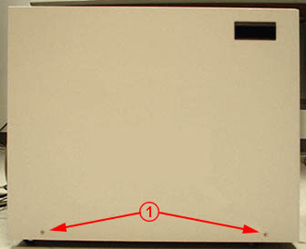
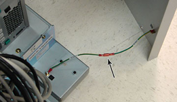
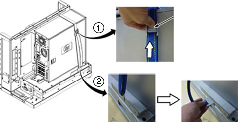
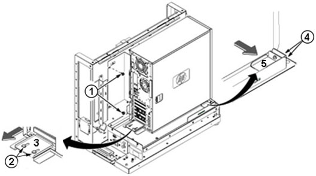
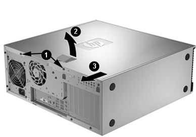
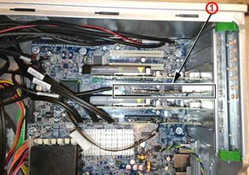
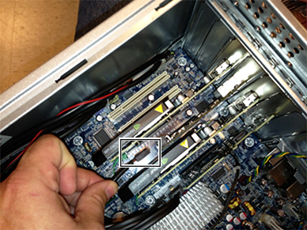
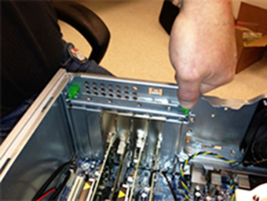

The cooling fan is off only when the Host PC is turned off
or the power cable is disconnected. If the power cord is not unplugged
when installing the NIC, the card may be damaged or the system will
not recognize the change.
Disconnect the power cord from the power source before
opening the Host PC to avoid damage to a board or component.
Notice
Potential component damage
Electrostatic discharge (ESD) can cause permanent damage to electronic components.
Observe the following ESD precautions:
Work on a static-free mat.
Wear a static strap to make sure that any accumulated electrostatic charge is discharged from your body to the ground.
Create a common ground for the equipment being worked on by connecting the static-free mat, static strap, and peripheral units to that piece of equipment.
For more information on ESD protection, see MR Service Safety Manual (5452735).
About this task
Overview
This procedure details replacing or swapping the dual port Hewlett-Packard
(HP) Network Interface Card (NIC) in a HP Z400 computer.
Procedure
Shut down all system applications, and power down the GOC.
Use a Phillips screwdriver to remove the two screws (1) from
the left side panel of the GOC, and set the screws aside; carefully
lift the panel up and off to avoid straining the ground lead.
Figure 1. Left Side Panel on GOC

Disconnect the ground lead that connects the side panel to the
GOC main chassis at the center of the lead.
Figure 2. Ground Lead

Remove all cables connected to the computer, ensure they are
properly labeled, and note their locations for reattachment.
To loosen and remove the strap securing the computer:
Press the release lever (1) on the buckle of the strap.
Remove the hook (2) from the base of the computer.
Figure 3. Removing Computer Strap

To remove the computer:
Remove the two screws (1) securing the back bracket.
Loosen the two screws securing the plate at the back (2), and
slide the plate in the direction of the arrow (3).
Loosen the two screws securing the plate on the side (4), and
slide the plate in the direction of the arrow (5).
Figure 4. Removing HP Z400 Computer

Notice
The computer weighs 50 lb. (22.7 kg), which requires two people to remove it from the GOC.
Carefully remove the computer using the back and bottom brackets
from the GOC, and position it on its side as shown.
To access the inside of the computer:
Remove the two screws (1) securing the left cover at the back
of the computer, and set them aside.
Figure 5. Removing HP Z400 Left Cover

Pull out on the handle (2), slide the cover back (3), and set
it aside in a safe location.
Locate the installed dual port NIC between the two NVIDIA®
cards in the Peripheral Component Interconnect (PCI) Slot 3 (1).
Figure 6. NIC in PCI Slot 3

Disconnect and remove the Desktop and mobile Architecture for
System Hardware (DASH) Cable that connects the mother board and the
NIC, and set it aside.
Figure 7. DASH Cable

Press down on both green levers, one on each side of the retention
clamp, to release it.
Figure 8. Green Levers on Retention Clamp

Gently pull the existing NIC straight up from the motherboard
to remove it.
Firmly seat the new dual port NIC into the open slot of the
HP Z400 computer.
Close the retention clamp by pressing down on it until the green
levers click into place.
Align the bottom groove of the left side panel with the bottom
edge of the GOC chassis, secure with the two Phillips screws removed
earlier, and reattach the ground lead as shown in Ground Lead.